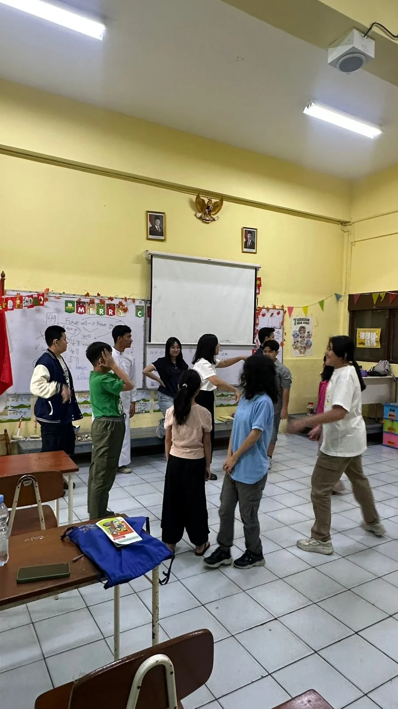
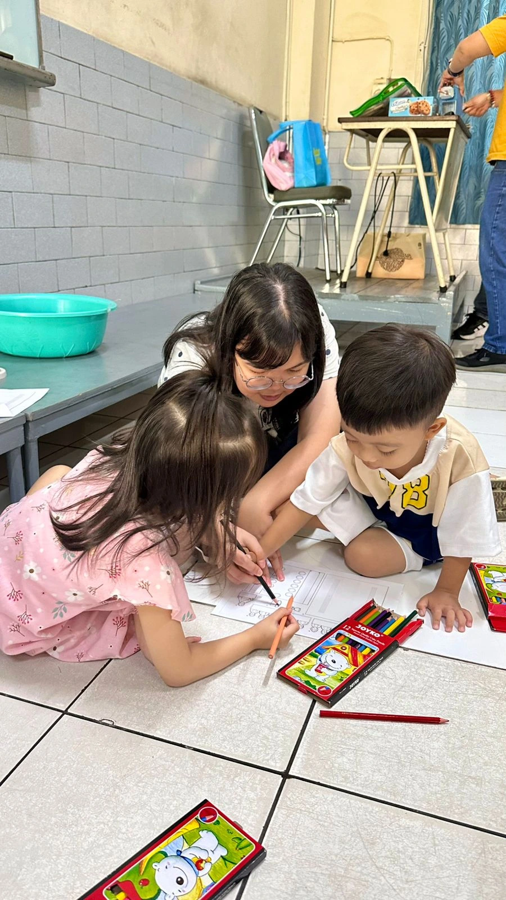
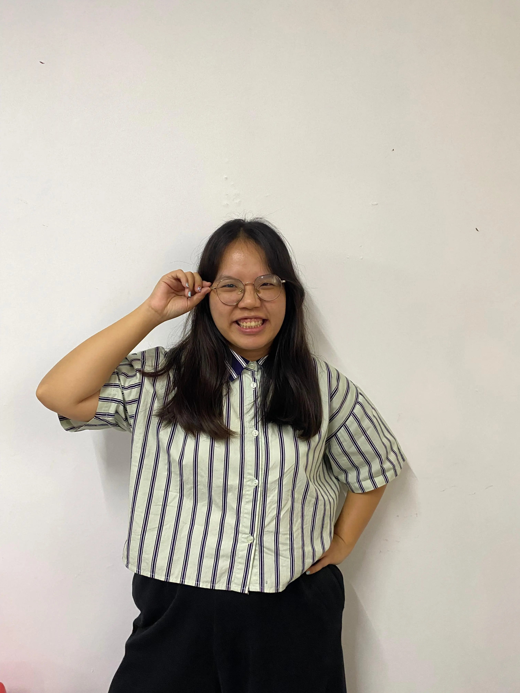
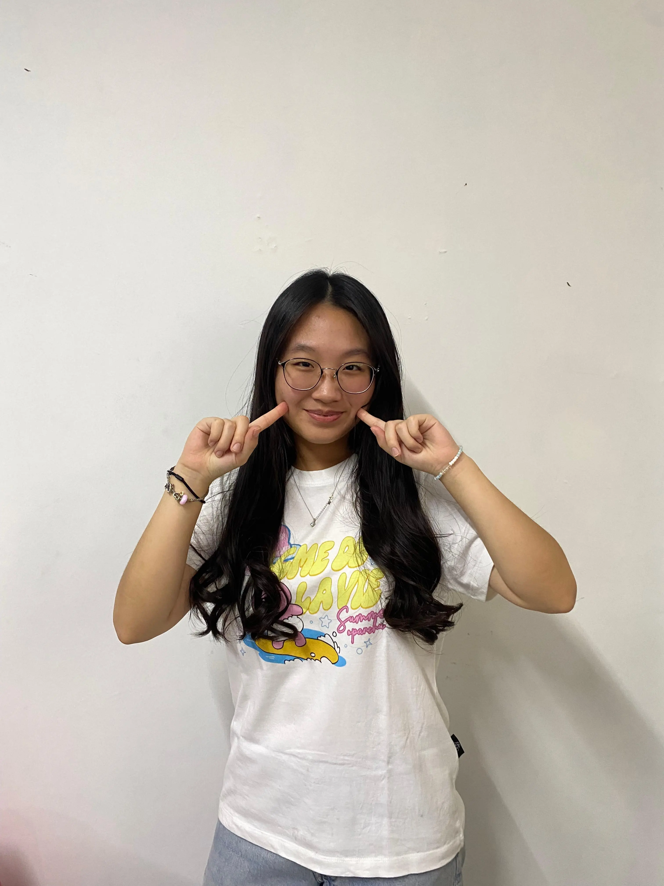
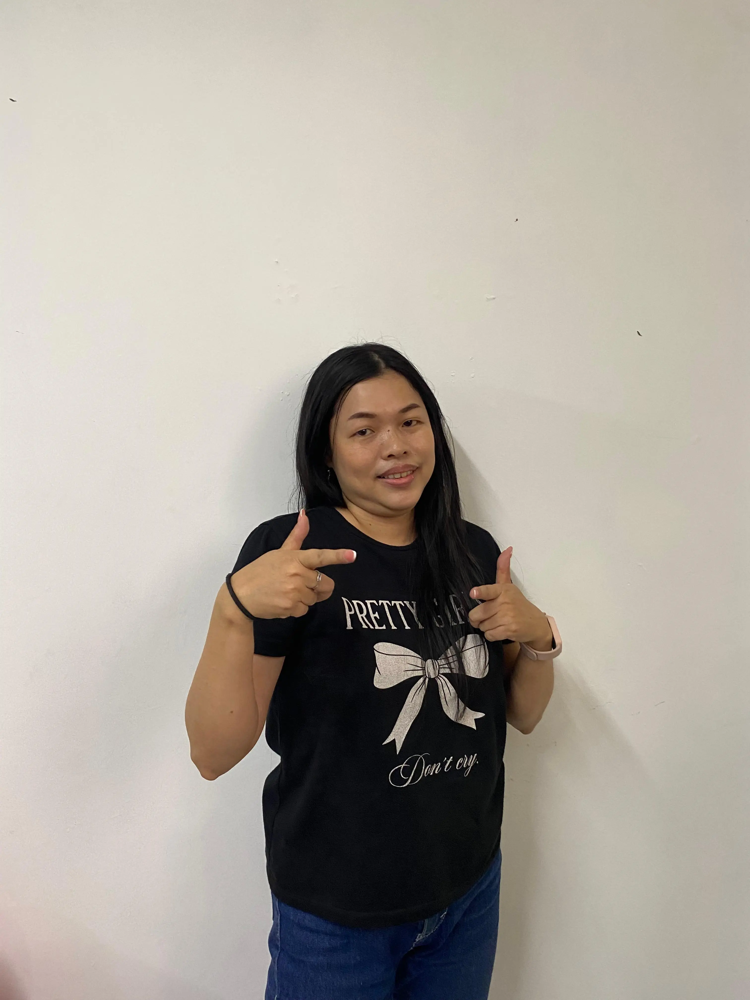

Iman yang dikenalkan sejak kecil
Kenali kenapa BIA ada, apa yang dilakukan anak-anak di sini, dan kakak-kakak yang menemani mereka setiap Minggu.



Iman perlu dikenalkan sejak kecil
Masa kecil adalah waktu anak-anak sedang membentuk kebiasaan dan pengalaman pertama mereka. Bina Iman Anak (BIA) Toasebio hadir sebagai salah satu ruang untuk itu — tempat anak mulai mengenal Tuhan lewat cara yang dekat dengan dunia mereka.
Di sini anak-anak berdoa bersama, mendengarkan cerita Kitab Suci, sampai ikut ambil bagian dalam kehidupan gereja. Hal-hal kecil yang terus diulang ini kami percaya bisa jadi bekal yang suatu hari dipahami maknanya lebih dalam, dengan caranya masing-masing.
Kami tidak tahu akan menjadi siapa anak-anak ini ketika dewasa. Tapi selama mereka masih bersama kami, kami ingin memberi mereka pengalaman iman yang baik, hangat, dan bermakna.
Pengalaman religius sejak kecil ditemukan berkaitan dengan kehidupan iman saat dewasa (Nakamura et al., 2026), begitu juga frekuensi mengikuti kegiatan keagamaan masa kecil (Chen et al., 2025).
Dari hal-hal sederhana
Berdoa bersama, mengucap syukur, belajar berbagi, memperhatikan teman, pelan-pelan belajar melayani. Hal-hal kecil seperti ini yang anak-anak temui setiap kali datang ke BIA.
 Berdoa
Berdoa
 Melayani
Melayani


Perjalanan BIA
BIA adalah salah satu titik awal, bukan garis akhir. Setelah ini ada beberapa tahap yang bisa dilalui anak, meski jalannya bisa berbeda-beda untuk setiap anak.
-
1
BIA · Masa Kanak-kanak
Mengenal Tuhan, berdoa, mengenal Kitab Suci, dan mulai mengalami kehidupan menggereja.

-
2
Komuni Pertama
Mulai mengambil bagian lebih dalam dalam kehidupan Ekaristi dan komunitas Gereja.
-
3
Setelah Komuni
Anak tetap punya ruang untuk bertumbuh dan terlibat, misalnya lewat kegiatan anak/remaja, PPA, Sekolah Minggu, atau bentuk pelayanan lain di paroki.
-
4
Krisma
Memasuki tahap pendalaman iman dan kehidupan menggereja yang lebih dewasa.
-
5
Remaja & OMK / Pelayanan
Menemukan ruang untuk terlibat lebih aktif dalam komunitas dan pelayanan Gereja, sesuai minat dan kesempatan masing-masing.
-
6
Terus Bertumbuh
Perjalanan iman tidak berhenti pada satu program atau satu tahap usia.
Para Pembimbing
BIA ditemani oleh kakak-kakak pembimbing yang hadir, mendengarkan, dan bermain bersama anak-anak — bukan sekadar “pengajar”, tapi orang-orang yang membantu mereka merasa aman dan diterima saat belajar tentang iman. Geser ke samping untuk kenalan, lalu klik foto untuk membaca sapaannya.

Kak Ailin
Koordinator
Lihat sambutanKak William
Pembimbing BIR (5 SD-SMP)
Lihat sambutan
Kak Lissa
Pembimbing BIR (5 SD-SMP)
Lihat sambutanKak Ela
Pembimbing 3-4 SD & PIC Lektor
Lihat sambutan
Frater Cilo
Pembimbing BIR (5 SD-SMP)
Lihat sambutan
Frater Ganda
Pembimbing kelas TK
Lihat sambutan
Suster Carel
Pembimbing kelas TK
Lihat sambutan
Kak Maria
Pembimbing kelas 2-3 SD
Lihat sambutanPunya hati untuk mendampingi anak-anak?
Kami selalu terbuka buat kakak-kakak yang mau belajar dan melayani bareng anak-anak di sini. Kabari koordinator kami, lalu kamu akan menjalani masa magang lebih dulu sebelum bergabung secara resmi. Nggak harus langsung jago semuanya, kok — kita belajar pelan-pelan bareng.
- Hati Yang Mau Melayani
- Dibaptis Secara Katolik
- Sudah Menerima Krisma
- Bersedia Magang Dulu